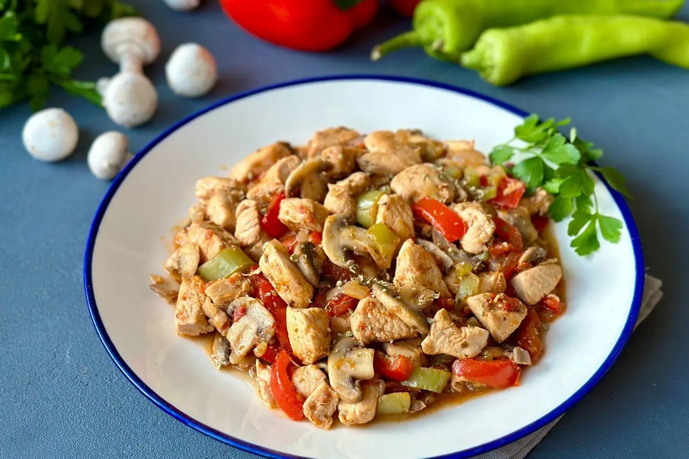
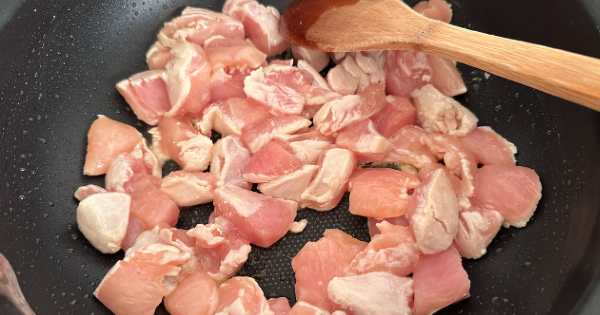
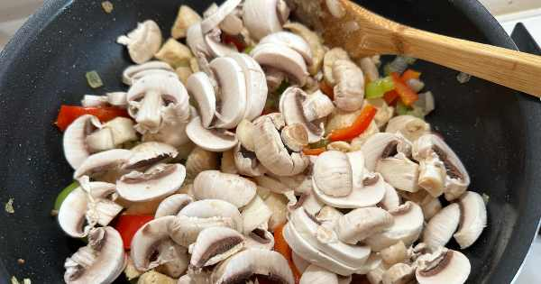
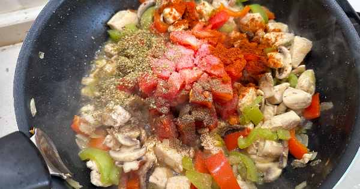
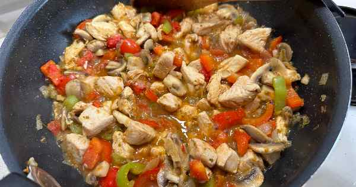
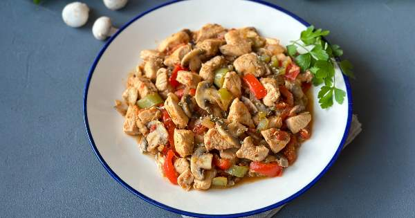

Tavuklu Mantar Sote

Tarif İçin Malzemeler
- 500 gramtavuk but eti
(kuşbaşı doğranmış)
- 400 gram
mantar
- 1adet
kuru soğan
- 1 adet
yeşil biber
- 1 adet
domates
- 1 adet
kırmızı biber
- 3yemek kaşığı
zeytinyağı
- 1 tatlı kaşığı
tuz
- 1 çay kaşığı (silme)
karabiber
- 1 çay kaşığı (silme)
kimyon
- 1 çay kaşığı
kekik
- 1 tatlı kaşığı
kırmızı toz biber
Nasıl Yapılır ?
-
İyice ısıttığınız tavaya yağı alın üzerine tavuk etlerini ekleyin. Tavuklar suyunu
salıp hafifçe çekene kadar ara ara karıştırarak pişirin.

-
Pişen tavuk etlerinin üzerine yemeklik doğradığınız soğan ve biberleri alın. 2-3
dakika ara ara karıştırarak pişirin.
-
Daha sonra tavaya mantarları alın. Malzemeleri sürekli karıştırarak 2-3 dakika pişirin.

-
Son olarak tencereye doğranmış domates, baharat ve tuzu ekleyin. Ardından yemeğiniz hafifçe
suyunu çekene kadar ara ara karıştırarak, pişirmeye devam edin.

-
Tavuklu mantar sote piştikten sonra sıcak olarak servis edebilirsiniz.

-
Tavuklu mantar sote tarifiniz hazır. Afiyet olsun.

AFİYET OLSUN...